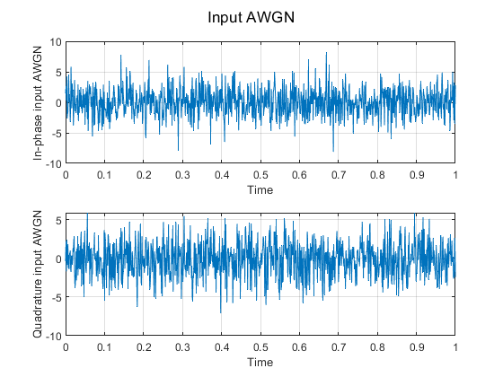
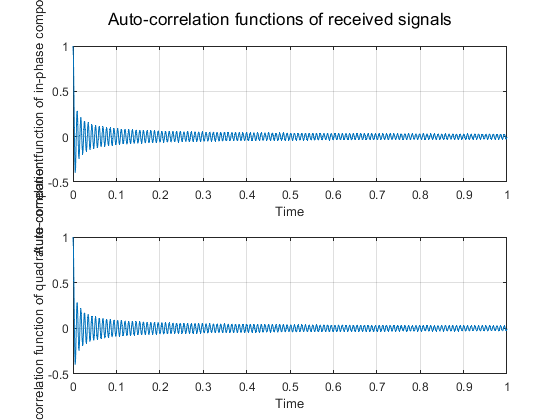
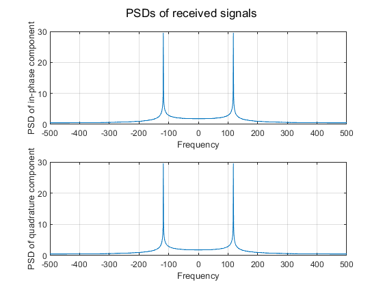
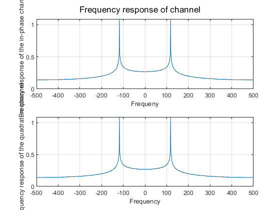
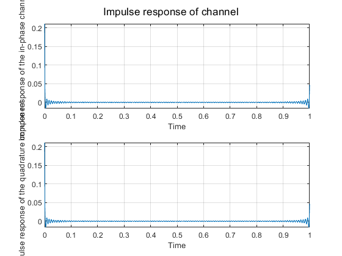
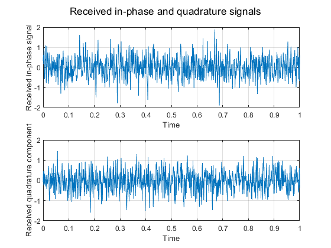
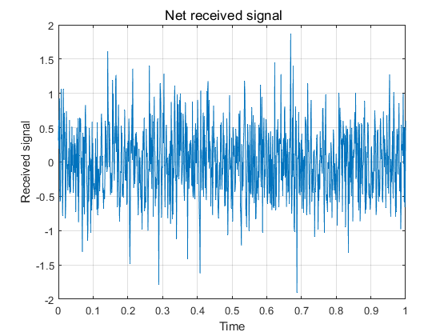

Contents
SYSTEM SETTING
IMPLEMENTATION
clear all
close all
clc
Pr = 1;
N0 = 10;
X_f = N0 / 2;
v = 50;
fc = 1e9;
c = 3 * 1e8;
angle = pi / 4;
tau = 0:0.001:1;
f = linspace(-500, 500, length(tau));
x_I = randn(1, length(tau)) * sqrt(X_f);
x_Q = randn(1, length(tau)) * sqrt(X_f);
fD = fc * v * cos(angle) / c ;
A_rI = Pr * besselj(0, 2*pi*tau*fD);
A_rQ = Pr * besselj(0, 2*pi*tau*fD);
psd_rI = abs(fftshift(fft(A_rI)));
psd_rQ = abs(fftshift(fft(A_rQ)));
H_rI = sqrt(psd_rI) / X_f;
H_rQ = sqrt(psd_rQ) / X_f;
h_rI = ifft(ifftshift(H_rI));
h_rQ = ifft(ifftshift(H_rQ));
rI = conv(x_I, h_rI);
rQ = conv(x_Q, h_rQ);
received_rI = rI(1:length(tau));
received_rQ = rQ(1:length(tau));
r = received_rI .* cos(2*pi*fc*tau) - received_rQ .* sin(2*pi*fc*tau);
FIGURE
figure
sgtitle('Input AWGN')
subplot(2,1,1)
plot(tau, x_I)
xlabel('Time')
ylabel('In-phase input AWGN')
grid on
subplot(2,1,2)
plot(tau, x_Q)
xlabel('Time')
ylabel('Quadrature input AWGN')
grid on
figure
sgtitle('Auto-correlation functions of received signals')
subplot(2,1,1)
plot(tau, A_rI)
xlabel('Time')
ylabel('Auto-correlation function of in-phase component')
grid on
subplot(2,1,2)
plot(tau, A_rQ)
xlabel('Time')
ylabel('Auto-correlation function of quadrature component')
grid on
figure
sgtitle('PSDs of received signals')
subplot(2,1,1)
plot(f, psd_rI)
xlabel('Frequency')
ylabel('PSD of in-phase component')
grid on
subplot(2,1,2)
plot(f, psd_rQ)
xlabel('Frequency')
ylabel('PSD of quadrature component')
grid on
figure
sgtitle('Frequency response of channel')
subplot(2,1,1)
plot(f, H_rI);
xlabel('Frequeny')
ylabel('Frequncy response of the in-phase channel')
grid on
subplot(2,1,2)
plot(f, H_rQ)
xlabel('Frequency')
ylabel('Frequency response of the quadrature channel')
grid on
figure
sgtitle('Impulse response of channel')
subplot(2,1,1)
plot(tau, h_rI)
xlabel('Time')
ylabel('Impulse response of the in-phase channel')
grid on
subplot(2,1,2)
plot(tau, h_rQ)
xlabel('Time')
ylabel('Impulse response of the quadrature component')
grid on
figure
sgtitle('Received in-phase and quadrature signals')
subplot(2,1,1)
plot(tau, received_rI)
xlabel('Time')
ylabel('Received in-phase signal')
grid on
subplot(2,1,2)
plot(tau, received_rQ)
xlabel('Time')
ylabel('Received quadrature component')
grid on
figure
sgtitle('Net received signal')
plot(tau, r)
xlabel('Time')
ylabel('Received signal')
grid on
      